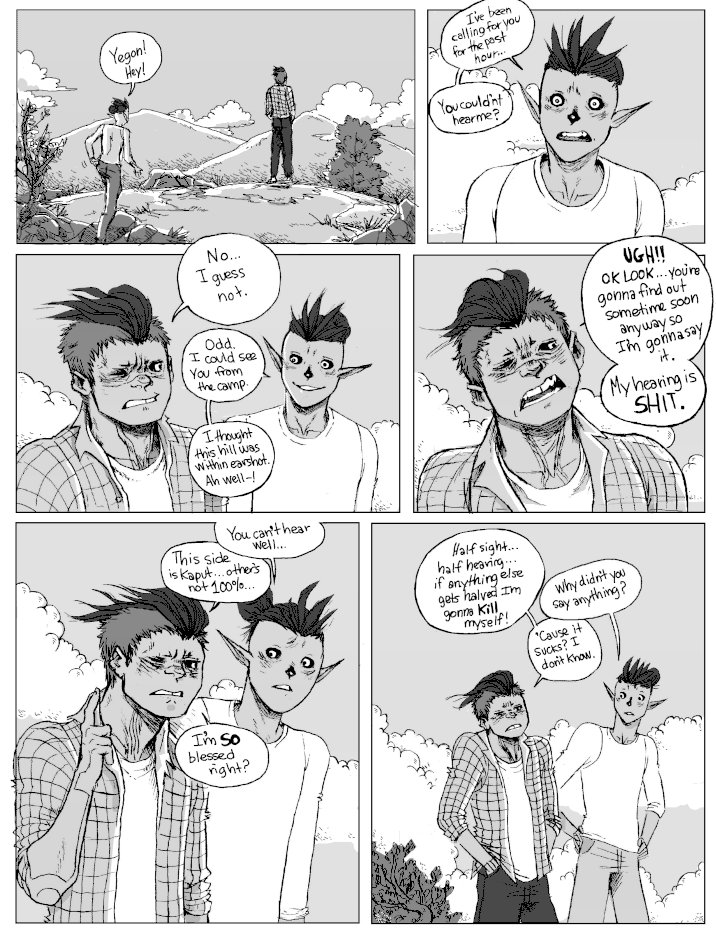
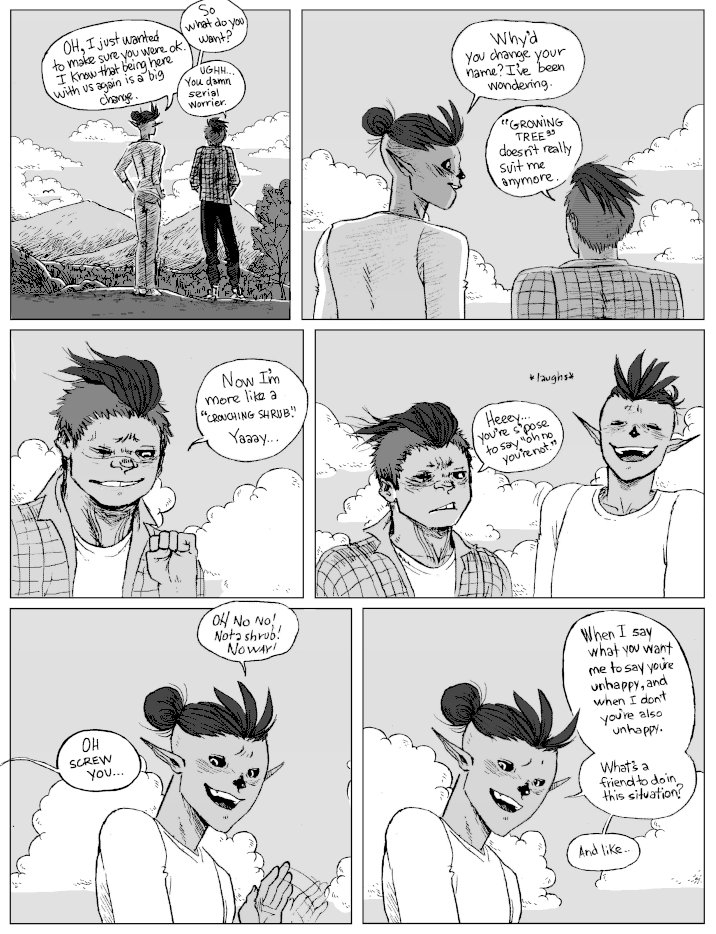
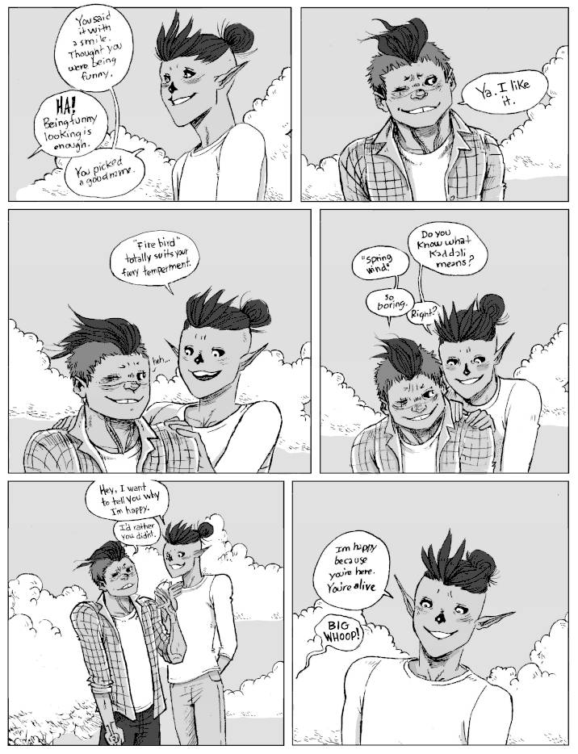
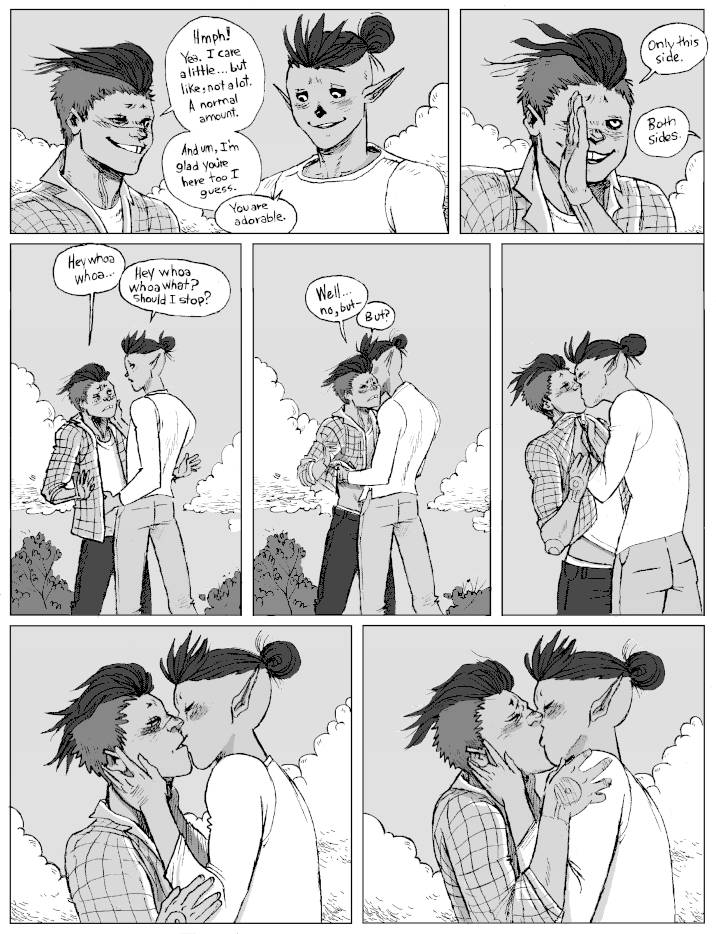
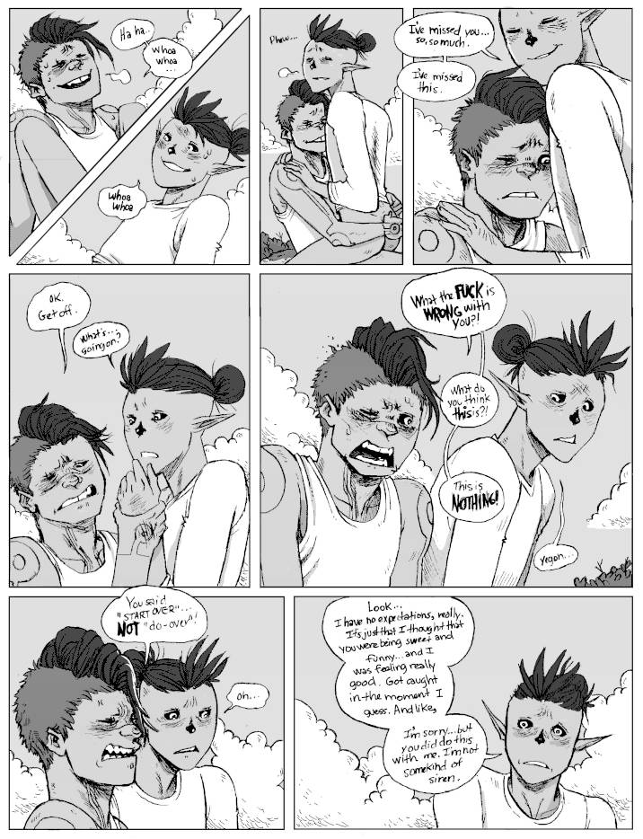
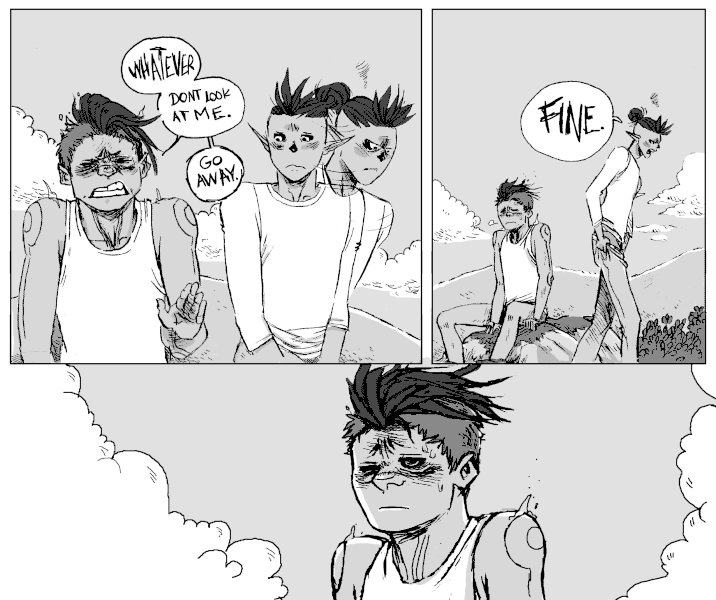
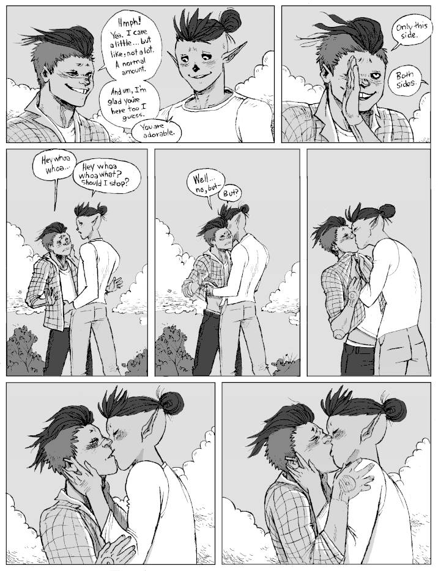
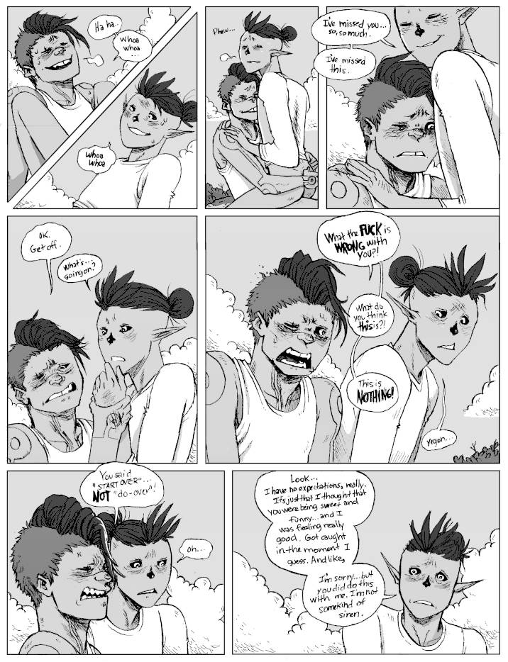
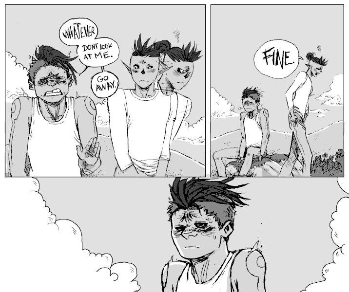

Reunited
Context. Yegon(formerly, Hakazi) was shot in the eye during a Solo Devs mission in Ren Creek, his group thought him dead. After recovering he was incarcerated in Liskar. Yegon and the Solo Devs crossed paths again 6 years later. This moment is a few months after Yegon is back with the Solo Devs. Kaddali now heads the Solo Devs, and under their leadership the group is doing better than ever. Yegon, on the other hand, feels bitter about what's happened to him, and has difficult accepting the fact that his former group has been thriving without him. Kaddali wants to be closer to Yegon, they still have feelings for him (they were dating prior to the accident), but because of how closed-off and bitter he's become it is not easy...
Warning. Swearing, sex(not shown, but implied), also... 'butt' singular..
   





Go back to the hakum main page.